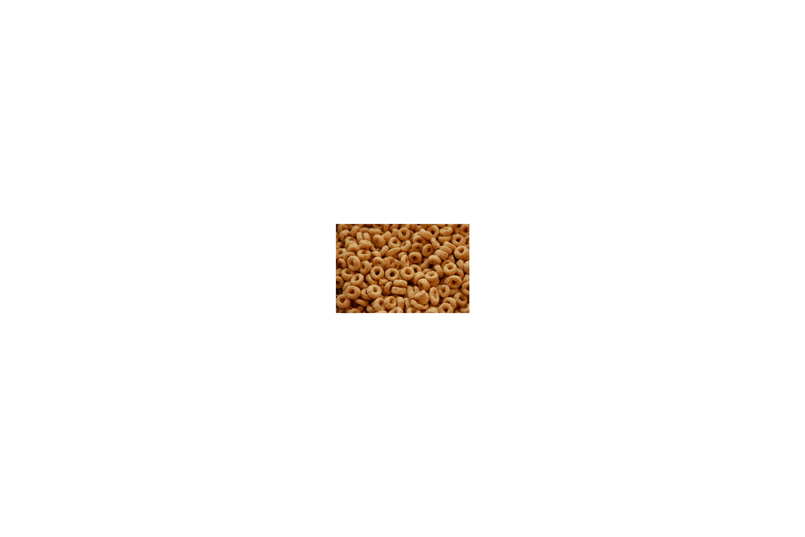

Departments: Grocery
As the biggest source of calcium here at Focal Foods, it is nearly impossible to live
without milk. Focal Foods sells various brands of milk for customers and all have proven
to be a success. Without a doubt, we can safely say that chocolate milk is the most popular
type we have to sell. Since this product is heavily in demand from many people, you might
want to get as much as you can.
A good snack for all the people who need a side dish in their lunch, the crackers here at
Focal Foods have been considered to be a great buy. We sell various types and most of them
have been popular with our customers. Crackers have the benefits of protein, calcium and
dietary fiber. Make sure that the crackers don't have too much salt, you don't want to
increase sodium intake. If you like, have crackers with some cheese.
Let's just say that you can't live without the benefits that come with different types of
bread. The biggest benefits that come from bread include a lower risk of weight gain and
heart disease. We normally sell packs of bread for $4.99 each. Various brands are sold
and they all have proven to be a success with the customers. If you are looking for a
specific type, feel free to stop by.
Who doesn't want spaghetti noodles on their grocery list? This food is ranked as Focal
Foods most popular grocery and the reason for that is because spaghetti is favorite for
many Americans. The benefits of spaghetti noodles match with what is applied to them such
as sauce or vegetables. Packs of noodles are sold for $1.99 each. Might want to pick them
up while you can, they sell out quickly.
Good for crackers and sandwiches, jelly brings happiness to those who enjoy it with a
passion. Its benefits can help with your overall health and the nutrition facts make this
very clear when you pick up jars of them here at Focal Foods. A jar of jelly sells for
$2.99 each. Focal Foods also sells different types of jelly including but not limited to,
strawberry flavor.
Focal Foods sells tomato and cream of mushroom soups, but the one soup the outranks them
all is none other than chicken soup. Warm for the average person and beneficial for their
overall health. If you ever have a cold or some other kind of virus, chicken soup can help
to ease it. Cans of chicken soup sell for $0.99 each. While this soup is known to sell out
in the winter, make sure to have some during the other seasons.

Focal Foods sells various cereals for $4.99 each and all of the types that are sold here
have proven to be very successful. Rich in fiber, cereal is a very important aspect of
breakfast and this is something that needs to be stated in order to avoid the risk of
cancer and high blood pressure. Come see our catalog of what we have to offer and we can
assure you that there is something waiting for you.
This goes great with the spaghetti noodles that are sold here at Focal Foods and many other
things as well. Tomato sauce has the benefits of cutting cholesterol, improving eyesight
and reducing any risk of cancer. A jar of tomato sauce costs $7.99 each and like the
spaghetti noodles, tomato sauce is another favorite among many Americans. Feel free to
pick it up because it might run out quickly.
Jelly has a companion and that companion is none other then peanut butter. Focal Foods
understands that some are allergic to it and we have signs to warn people of this. Despite
that, peanut butter contains protein, potassium, fiber, magnesium and vitamin E. All of
these serve great benefits for your health. Oh yeah, you might want to buy some for a dog.
Dogs are known to love peanut butter as well.
©2016 FOCAL FOODS